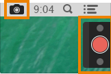
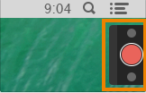
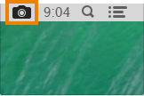

General preferences
- Always keep Snagit running in the background:
- Capture Window and Menu Bar Icon: Displays the Snagit icon and options in the menu bar and displays the Capture window in the upper right corner of the screen.

- Capture Window: Displays the Capture window in the upper right corner of the screen which provides quick access to capture options and the ability to change keyboard shortcuts. The Capture window expands when you hover the cursor over the blue bar. See Working with the Capture window.

- Menu Bar Icon: Displays the Snagit icon and options in the menu bar.

- Send anonymous usage information: Send anonymous data on Snagit usuage to help TechSmith improve future versions.
- Automatically check for updates: Automatically checks for the latest version of Snagit when connected to the Internet.
- Automatically download updates: Automatically downloads the latest updates for Snagit when connected to the Internet.
See also
Capture preferences
Output preferences
Advanced preferences
Keyboard preferences
 General preferences
General preferences